A good grazing board genuinely feels different from a regular meal.
Instead of individual plates, everyone gathers around one spread, which slows people down and turns the meal into something closer to a conversation than a routine.
That is exactly the effect worth chasing for Mother's Day specifically, something that looks thoughtful and feels intentional, built from ingredients that do not need to be fancy to come together beautifully in the end.

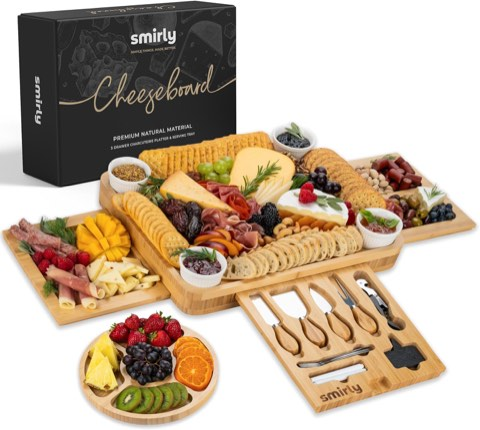
SMIRLY Charcuterie Boards Set, Large Bamboo Cheese Board with Accessories
Shop on AmazonA Few Styling Basics That Make Any Board Look Better
Whichever board gets built, the assembly order matters more than people expect.
Small bowls go down first, for dips, olives, nuts, since they create structure everything else gets built around.
Larger cheese wedges go in next, spread into different corners rather than crowded into the center.
Meat should never lie flat.
Folding, rolling, or arranging it into small rosettes adds texture that a flat slice just cannot.
From there, small fillers like berries, nuts, or crackers go into every visible gap, since empty space is what makes a board read as unfinished.
None of it requires imported ingredients, either, presentation does far more work than price ever does.
14 Mother's Day Grazing Board Ideas
1. The Personalized Board
This is the one worth building last, and arguably the one that matters most, instead of following any trend, build the board entirely around what Mom actually likes.
Loves dark chocolate?
Add more of it.
Avoids dairy?
Lean into fruit and nuts instead.
Has a nostalgic childhood favorite?
That earns a spot on the board too, trends aside.
Personalization is what turns a pretty board into a meaningful one, the ingredients matter less than the fact that someone paid attention to what she would actually want.
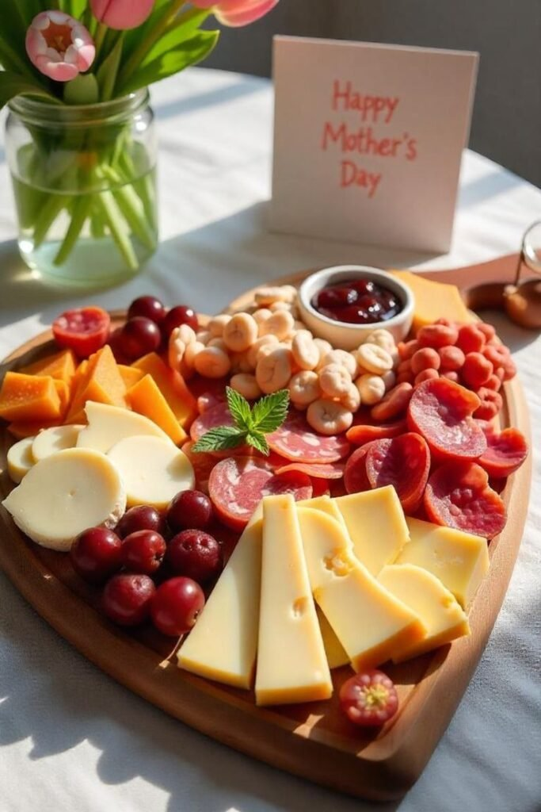
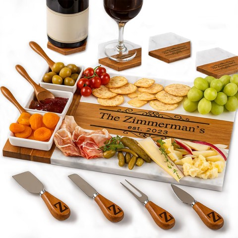
Personalized Charcuterie Board Set, Custom Engraved Marble and Wood with Knife Set
Shop on Amazon2. The Healthy and Fresh Board
Some moms genuinely prefer lighter options, and this board delivers that without sacrificing any of the visual appeal the rest of the list has.
Fresh fruit, raw vegetables, nuts, and lighter cheeses, grouped by color rather than scattered randomly, keep the whole thing looking as vibrant as it tastes.
Healthy does not have to mean boring here, it just means a little more intentional about what goes on the board in the first place.
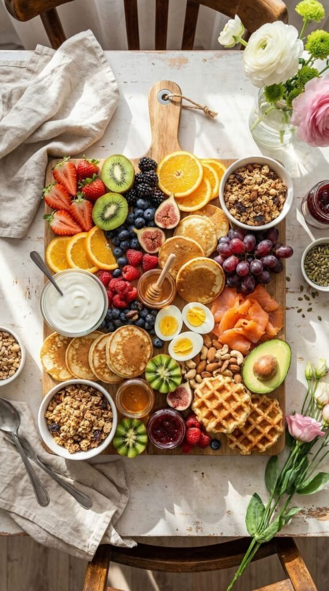
3. The Tea Time Board
This one leans soft and a little vintage, delicate cookies, finger sandwiches, fresh berries, and a few light pastries arranged without crowding.
Pulling out delicate serving dishes, even mismatched china, adds to the feeling instead of taking away from it.
The imperfection reads as collected, not sloppy.
It pairs naturally with tea or a light sparkling drink, and works especially well for a smaller, quieter celebration rather than a big crowd.
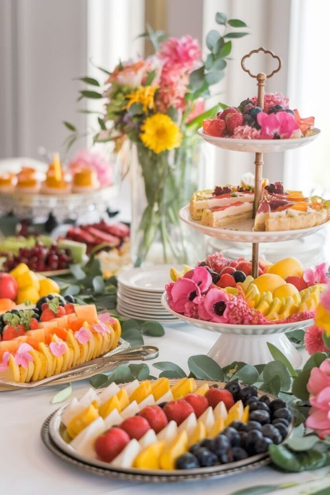
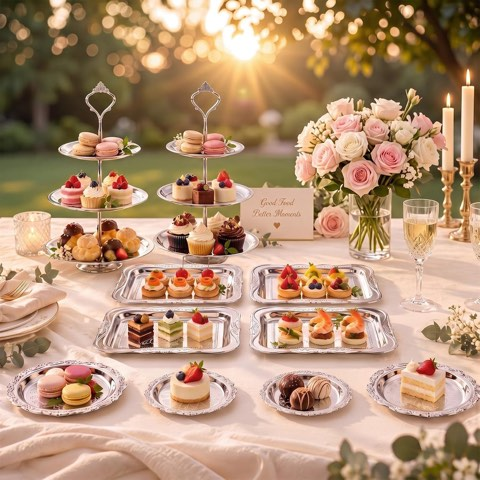
Vintage Floral Silver Serving Tray Set, 10 Pcs, with 3-Tier Tray, Rectangle
Shop on Amazon4. The Elegant Savory Board
For a mom who'd rather skip sweets entirely, this board leans fully into savory richness, cured meats, bold cheeses, olives, and pickled vegetables.
The result feels bold and confident rather than delicate, and it pairs especially well with a sparkling drink instead of anything sweet.
Savory spreads tend to slow a gathering down in a good way, people nibble more deliberately, which naturally stretches out the conversation around the table.
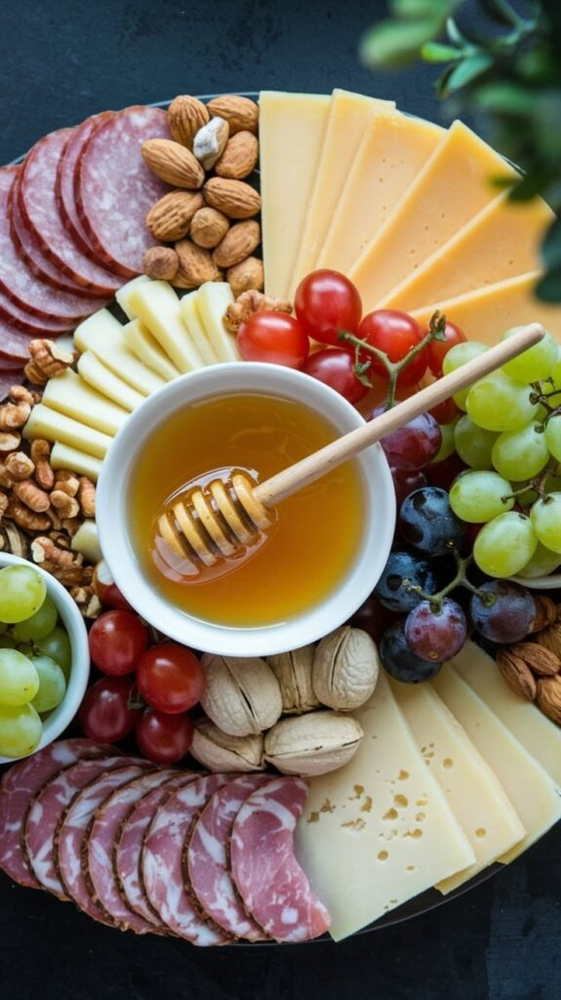
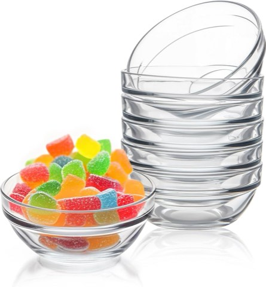
Small Glass Bowls, 3.5 Inch, 4 Oz, Stackable Mini Prep and Condiment Bowls
Shop on Amazon5. The Chocolate and Fruit Dessert Board
Not every Mother's Day board needs meat and cheese on it at all, sometimes dessert is exactly the point.
Rich chocolate pieces, truffles, and a drizzle sit alongside fresh berries and sliced fruit, which keeps the whole thing from tipping into overly indulgent territory.
The fruit does more work than it gets credit for, it lightens the richness of the chocolate just enough to keep every bite interesting instead of heavy.
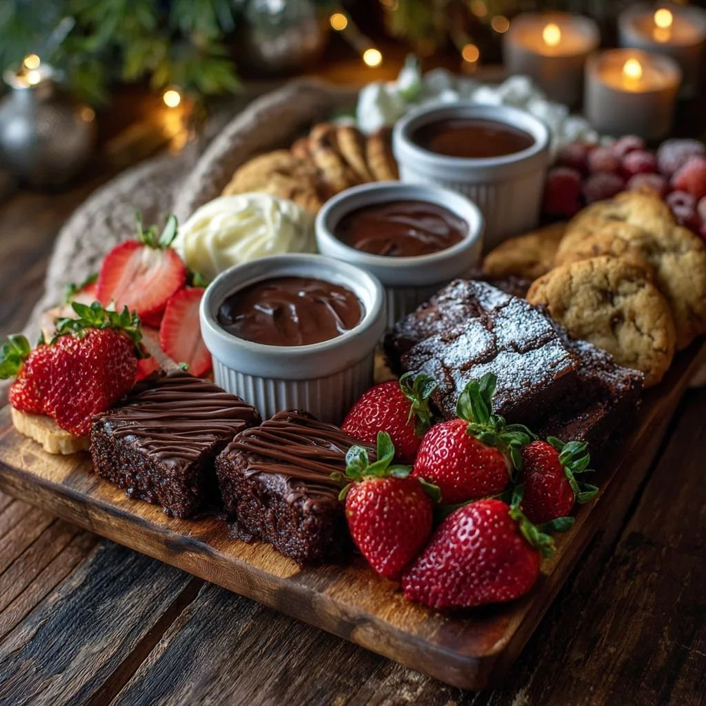
6. The Soft Neutrals Board
For a mom who gravitates toward neutral decor, matching the food palette to that same aesthetic makes the whole board feel like an extension of her taste.
Sticking to creams, tans, and soft greens, pale cheeses, almonds, light crackers, a few sprigs of herb, keeps the result calm and genuinely curated.
Simplicity ends up reading as more expensive than abundance here, which is a quieter effect than most of the other boards on this list but no less intentional.
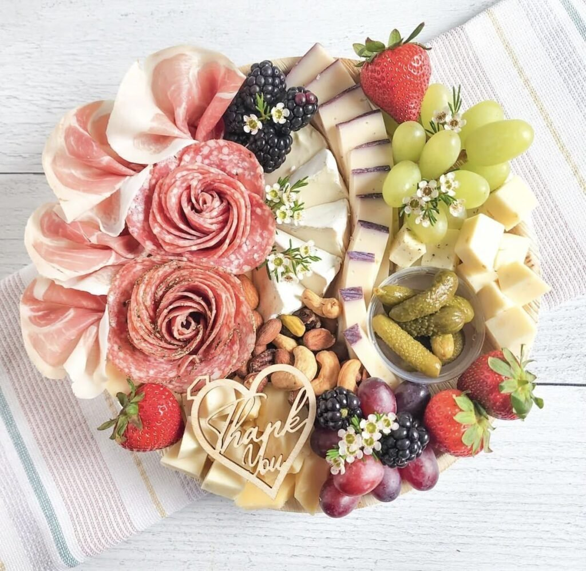
7. The High Tea Dessert Board
For a mom who loves refined sweets over anything savory, this board wins every time, mini tarts, macarons, scones, and delicate cookies arranged with real intention.
Layering the desserts at varying heights, using a cake stand if one's available, adds a sense of drama that a flat spread cannot match.
It fits a mid-afternoon celebration especially well, paired with tea or a light sparkling drink instead of a full meal.
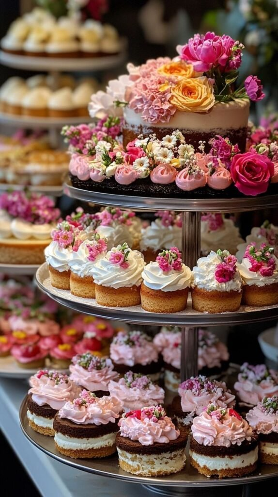
8. The Breakfast-in-Bed Board
For maximum emotional impact, this one gets served on a tray, straight to bed, scaled down to fit without losing any of its abundance.
Mini pastries, fruit, a small pot of coffee or tea, and a couple of soft cheeses keep it compact but still generous enough to feel like an occasion.
The surprise of it arriving unannounced is most of the appeal, the tray itself is almost as meaningful as what is actually on it.
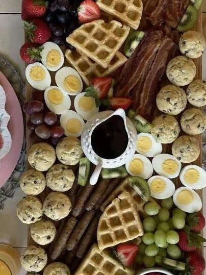
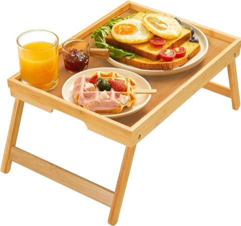
Bamboo Bed Tray Table with Foldable Legs, Breakfast Tray for Sofa and Bed
Shop on Amazon9. The Garden Party Board
Picture hosting outside with soft music playing in the background, that is the exact feeling this board is built around.
Fresh herbs, bright produce, light cheeses, and edible flowers keep everything feeling crisp and seasonal rather than heavy.
It is an especially strong fit for an outdoor Mother's Day celebration, where the food should feel as relaxed and unhurried as the setting itself.
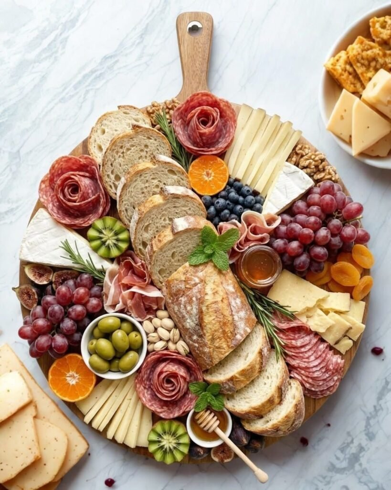
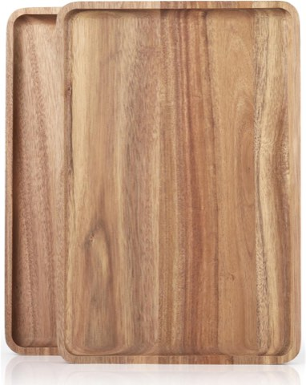
Solid Acacia Wood Serving Trays, 2 Pcs, 16 x 12 Inch, Rectangular Platters
Shop on Amazon10. The Luxe Cheese Lover's Board
For a mom who genuinely loves cheese, this one skips the extras and goes deep instead, four or five well-chosen cheeses, balanced out with honey, nuts, and a few dried fruits.
Pre-slicing at least one wheel removes the hesitation that stops people from being the first to cut into an untouched cheese, once one is already open, the whole board gets used.
This board is built around depth of flavor rather than sheer volume, which makes it feel considered instead of just generously stocked.
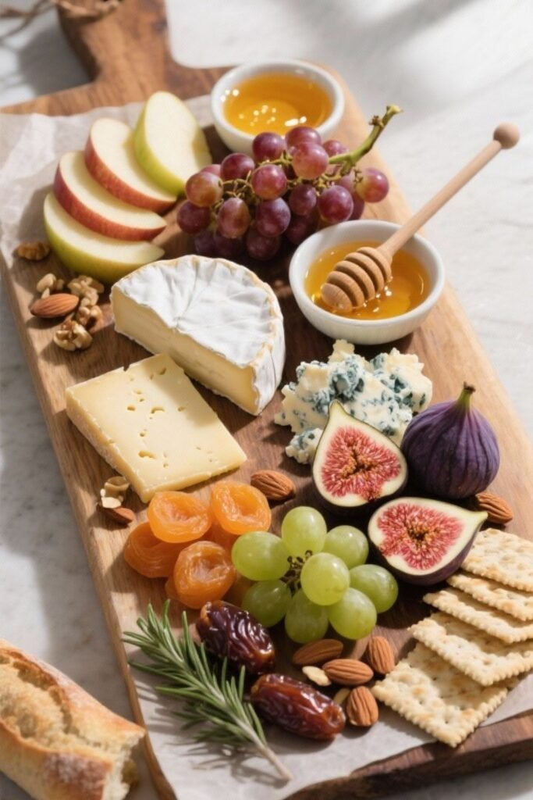
11. The Classic Floral Board
This is the board that screams spring the second it hits the table, soft pinks and whites, delicate cheeses, berries, and edible flowers tucked in throughout.
Arranging a few real or edible flowers around the edges frames the whole board and does more to elevate it than almost anything placed in the center.
The soft, romantic palette pairs naturally with sweet and creamy flavors, which makes this one equally at home at a brunch table or an afternoon tea setup.
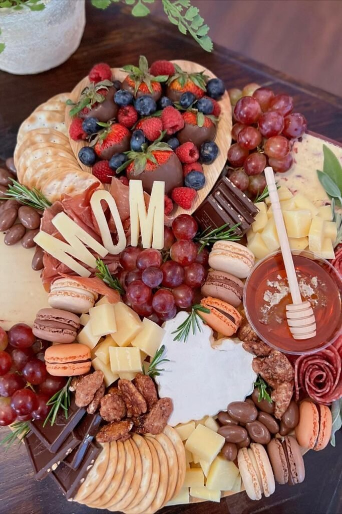
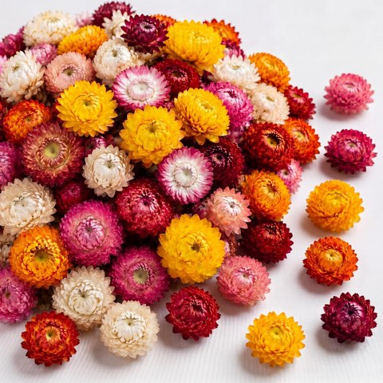
Dried Edible Flowers for Cocktails and Cake Decoration, 110 Pcs, Colorful
Shop on Amazon12. The Mediterranean Board
This is the board that reliably impresses without much extra effort, hummus, olives, feta, roasted vegetables, and warm pita cover a lot of ground in one spread.
Layering the dips into small bowls scattered across the board gives it real structure, rather than letting everything blur together in one flat layer.
The flavors land as vibrant and healthy but still genuinely indulgent, which is a balance that works especially well for a Mother's Day table.
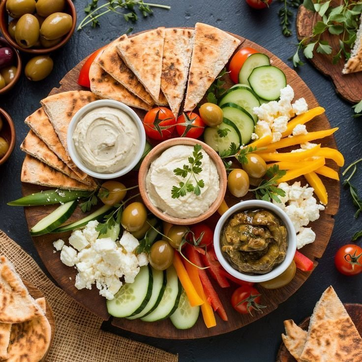
13. The Rosé-Inspired Board
This one leans effortlessly chic, soft blush tones, light and feminine flavors, built around the same color story a glass of rosé already lives in.
Keeping the palette tight to soft pinks, ivory, and light reds is what makes it feel curated instead of just pink for the sake of pink.
Strawberries, pink-tinged cheeses, and pale crackers all fit naturally.
Pour a chilled glass alongside it and the whole spread does double duty as both food and centerpiece, especially for an afternoon gathering with nowhere to rush off to.
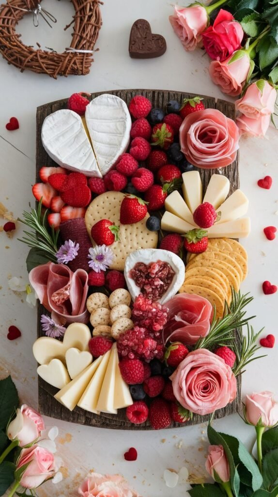
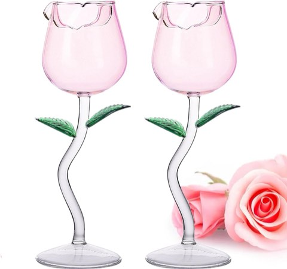
Rose Wine Glasses, Set of 2, Creative Rose-Shaped Wine and Champagne Goblets
Shop on Amazon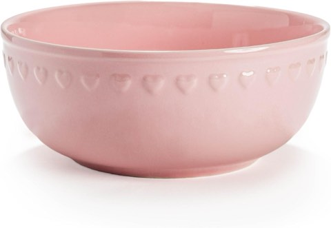
Paris Hilton Ceramic Serving Bowl, Stoneware with Heart Detailing, Pink
Shop on Amazon14. The Brunch-Inspired Board
If Mom loves brunch, give her the whole spread in grazing form instead of a single plate.
Mini pastries, fruit, soft cheese, and a few savory bites cover every craving at once without anyone having to choose.
The trick to keeping it from feeling heavy is abundance without density, lots of small things spread out, rather than a few large dishes crowding the board.
Small ramekins do more for the presentation than people expect.
A little jam, honey, or whipped butter in its own tiny bowl instantly reads as more put-together than the same thing squeezed onto the board directly.
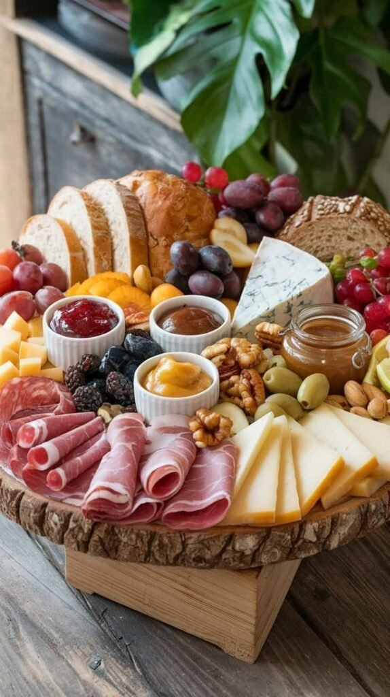
What Actually Makes a Board Feel Elegant
Scattering cheese and fruit across a board does not automatically make it elegant, it needs real structure.
A tight color story keeps the whole thing looking styled instead of thrown together: soft pinks and whites read romantic, neutrals with greenery read classic, pastels read spring-ready.
Height matters just as much.
A flat board reads as boring no matter how good the ingredients are, while stacked crackers, small risers, or a cake stand add the dimension that makes a spread look considered.
And every elegant board needs balance, something creamy, something crunchy, something sweet, something savory.
Skip one of those and the board starts to feel incomplete, no matter how much food is actually on it.
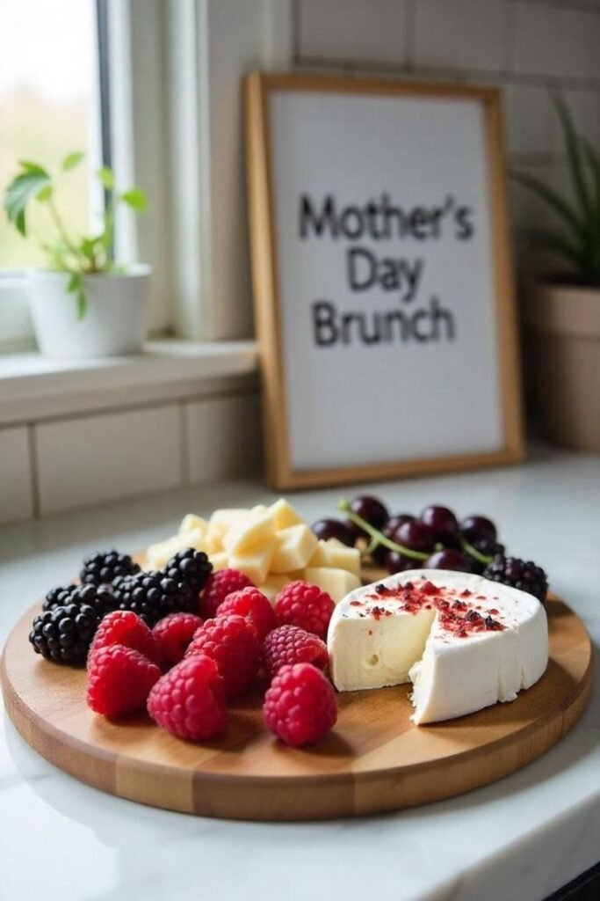
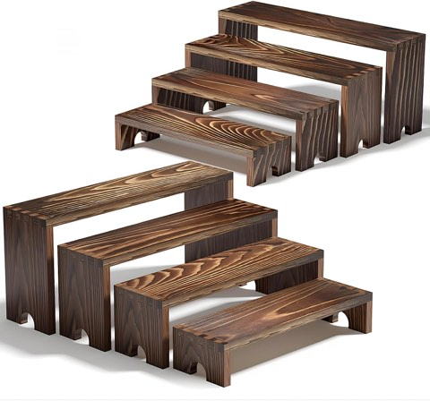
Wooden Tiered Risers Display Stands, 2 Set, Stackable for Serving and Events
Shop on AmazonFinal Thoughts
An elegant Mother's Day board does not actually require perfection, just intention, a tight color story, a little height, balanced flavors, and ingredients that actually suit the specific person it is for.
Mom genuinely will not remember whether the brie was triple cream or the regular kind.
She will remember that someone put real thought into making something beautiful just for her, and that is really the whole point of it all.